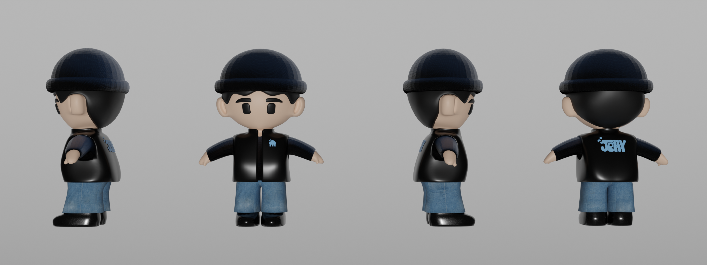
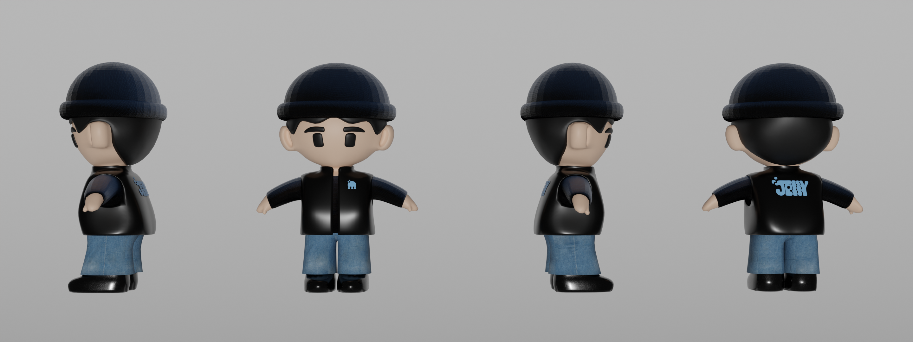

This project consisted on the development of a fun character and his environment. It was a great way to play and practice with lights and emission in 3D modelling, trying to create a deep ocean setting.
The animation process was also very interesting trying to make Benji look like he's somewhat swimming in place, while trying to catch a jellyfish. The animal's movements were also a fun challenge in order to look semi-realistic and dynamic.
Blender
Photoshop
Illustrator
 
